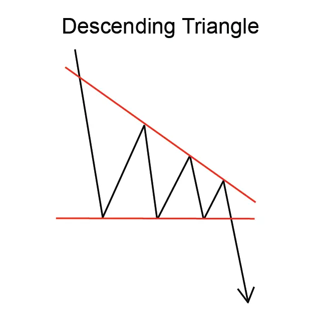
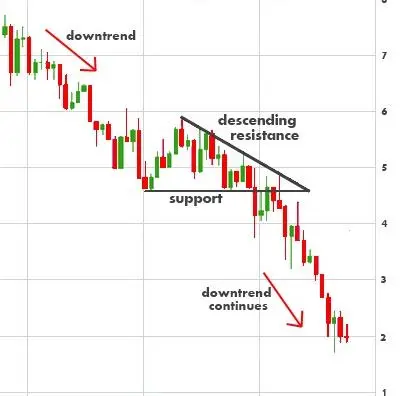

Descripción
Un triángulo de continuidad descendente tiene dos líneas de tendencia convergentes.
La línea de tendencia inferior es horizontal y la línea de tendencias superior se
inclina hacia abajo. El patrón ilustra bajas que ocurren a un nivel de precios constante,
con altos que se mueven constantemente más bajo. El patrón
muestra dos altos que tocan la línea de tendencia superior y dos bajos
que toquen la línea inferior.
Este patrón se confirma
cuando el precio se rompe de la formación de triángulo para cerrar
por debajo de la línea de tendencia inferior.
El volumen es un factor
importante a tener en cuenta. Por lo general, el volumen sigue un patrón fiable: el
volume debe disminuir a medida que el precio fluctúa hacia atrás y
hacia adelante entre una gama cada vez más estrecha de altibajos y bajos.
Sin embargo, cuando se produce una brecha, debe haber un aumento notable en el volumen.
Si esta imagen de volumen no es clara, los inversionistas deben ser cautelosos acerca
de las decisiones tomadas sobre la base de este patrón.
Características importantes
A continuación se presentan
características importantes sobre este patrón.
Ocurrencia de una breakout
Los analistas técnicos prestan atención a cuánto tiempo
tarda el Triángulo en desarrollarse hasta su apogeo. La regla general es
que los precios deberían estallar, penetrando claramente la línea
de tendencia inferior, en algún lugar entre tres cuartos y dos tercios de
la anchura horizontal de la formación. La ruptura, en otras palabras, debería
ocurrir mucho antes de que el patrón alcance el apogeo del Triángulo.
Cuanto más cerca de la brecha ocurre al pico, menos fiable es la formación.
Duración del Triángulo
El Triángulo es un patrón
relativamente a corto plazo. Puede tardar entre uno y tres meses en formarse.
Forma
del triángulo descendente
La línea de tendencia horizontal inferior no
tiene que ser completamente horizontal.
Volumen
Los inversores deberían
ver que el volumen disminuye a medida que el patrón avanza hacia el apogeo del Triángulo.
En breakout, sin embargo, debe haber un aumento notable en el volumen
Consideraciones
de negociación
Duración del patrón
Considere
la duración del patrón y su relación con sus horizontes de tiempo de
negociación. La duración del patrón se considera como un indicador de
la duración de la influencia de este patrón. Cuanto más largo sea el
patrón, más tiempo tardará en que el precio alcance su objetivo.
Cuanto más corto sea el patrón, más rápido se moverá
el precio. Si está considerando una oportunidad de comercio a corto plazo,
busque un patrón con una duración corta. Si está considerando una
oportunidad de comercio a largo plazo, busque un patrón con una duración más
larga.
Precio objetivo
El precio objetivo proporciona una importante i
ndicación sobre el movimiento potencial de los precios que este patrón indica.
Considere si el precio objetivo para este patrón es suficiente para proporcionar
rendimientos adecuados después de que sus costos (como comisiones) se hayan tenido en cuenta.
Una buena regla es que el precio objetivo debe indicar un retorno potencial de más del 5% antes
de que un patrón se considere útil. Sin embargo, debe tener en cuenta el precio actual
y el volumen de acciones que tiene la intención de negociar. También, compruebe que el
precio objetivo ya no se ha alcanzado.
Tendencia de entrada
La tendencia
de entrada es una característica importante del patrón. Una tendencia de entrada
superficial puede indicar un período de consolidación antes de que comience el
movimiento de los precios indicado por el patrón. Busque una tendencia de entrada que
sea más larga que la duración del patrón. Una buena regla es que la
tendencia de entrada debe ser al menos 2 veces la duración del patrón.
Criterios que respaldan
Busca una región de apoyo en la línea de
tendencia inferior y una línea de resistencia en la altura más alta del Triángulo.
Media móvil
Compara los precios con la media móvil de
200 días. Cuando los precios están cerca o alcanzan la media móvil de
200 días, esta señal se considera más fuerte.
Volumen
Un fuerte pico de volumen el día de la confirmación del patrón es un indicador
fuerte en apoyo del potencial para este patrón. El pico de volumen debe estar
significativamente por encima de la media del volumen durante la duración del patrón.
Además, el volumen durante la duración del patrón debería estar
disminuyendo en promedio.
Criterios que refuten
No hay aumento de
volumen en la breakout
La falta de un pico de volumen el día de la
confirmación del patrón es una indicación de que este patrón
puede no ser fiable. Además, si el volumen ha permanecido constante, o estaba aumentando,
durante la duración del patrón, entonces este patrón debe considerarse
menos fiable.
Tendencia de entrada corta
Una tendencia de entrada que
es significativamente más corta que la duración del patrón es una
indicación de que este patrón debe considerarse menos confiable.
Comportamiento subyacente
Este patrón, con sus altibajos cada vez más bajos
y bajos constantes, indica que los vendedores son más agresivos que los compradores.
